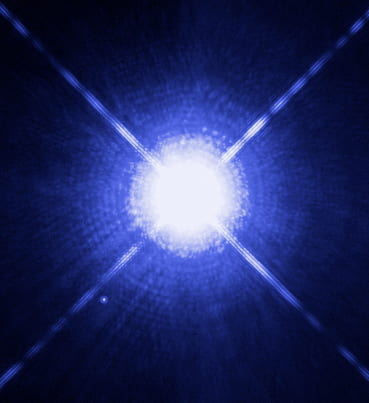
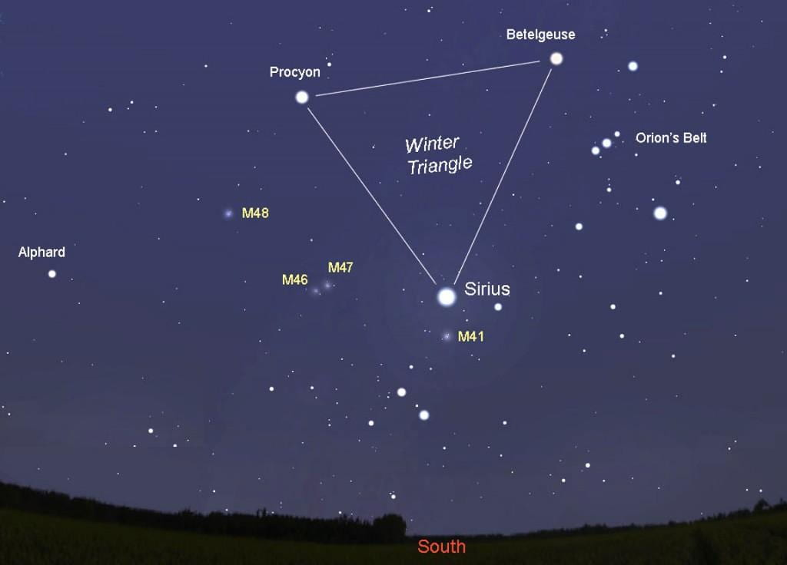
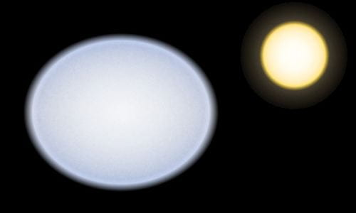

Figure1: This Hubble Space Telescope image shows Sirius A, the brightest star in our nighttime sky, along with its faint, tiny stellar companion, Sirius B. Astronomers overexposed the image of Sirius A [at centre] so that the dim Sirius B [tiny dot at lower left] could be seen. Credit: NASA, ESA, H. Bond (STScI), and M. Barstow (University of Leicester)
1)Brightest Star(s)
All stars shine but none do it like Sirius, the brightest star in the night sky! Sirius is famous for its brightness. With an apparent magnitude of −1.46, although Sirius appears dimmer than Jupiter and Venus, it is almost twice as bright as the second-brightest star, Canopus(see the List of the Brightest stars ). Sirius, the red giant star Betelgeuse(see this post), and Procyon in Canis Minor form a popular asterism known as the Winter Triangle(Figure 2). In addition, Sirius is visible from almost everywhere on Earth, except latitudes north of 73° N[1], so it is a well-known star for many ancient cultures. The name of "Sirius" comes from the Latin Sīrius, from the Ancient Greek Σείριος (Seirios, "glowing" or "scorcher")[2] and Sirius has over 50 other designations and names attached to it[1]. In ancient China, astrologers use Sirius to forecast military conditions. But the astronomical object I chose is not Sirius but Sirius A. Sirius is a binary star consisting of a main-sequence star of spectral type A0 or A1, termed Sirius A, and a faint white dwarf companion of spectral type DA2, termed Sirius B, although they are not separately visible to our naked eyes. That's also why I say Sirius is the brightest star but not Sirius A. We can not distinguish them using our naked eyes and Sirius B also contributes a little to the brightness of the "star" we see. But even if we only count Sirius A itself, it is still the brightest star in the night sky with an apparent magnitude of −1.47 (-1.46 for Sirius)! Sirius A appears so bright because of its intrinsic luminosity (A-type star) and its close distance to our solar system (the fifth closest stellar system).
Figure2: via Facebook: Farmington Community Stargazers. Two “dog stars” chase across autumn’s pre-dawn sky. The brighter one is Sirius, in Canis Major, the big dog. The other is Procyon of Canis Minor, the little dog. Both are high in the sky at first light, with Procyon far to the upper left of Sirius. Together with Betelgeuse in Orion the Hunter, they form the Winter Triangle.
- Mass: $latex 2.063 \pm 0.023 M_{\bigodot}$ [3]
- Radius: $latex 1.7144\pm 0.0090 R_{\bigodot}$ [3]
- Effective Temperature: $latex 9845 \pm 64 K$ [3]
- Bolometric Luminosity: $latex 24.74 \pm 0.7 L_{\bigodot}$ [3]
- Distance: $latex 2.64 \pm 0.01 pc$ [3]
- Mean Density: $latex 0.568 g/cm^3$ [4]
- Age: $latex 238 \pm 13 $Million years (Main Sequence) [4]
- Mass: $latex 1.00 \pm 0.01 M_{\bigodot}$
- Radius: $latex 0.0084\pm 0.00025 R_{\bigodot}$
- Effective Temperature: $latex 25193 \pm 37 K$
- Bolometric Luminosity: $latex 0.056 L_{\bigodot}$
- Distance: $latex 2.64 \pm 0.01 pc$
- Mean Density: $latex 2.38 \times 10^6 g/cm^3$
- Age: $latex 123 \pm 13 $Million years (White Dwarf Cooling Age)
3) Category of Sirius A

Figure3: Class A Vega (left) compared to the Sun (right). By RJHall - self-made using Paint-Shop Pro., CC BY-SA 3.0
- Mass: $latex 1.4-2.1 M_{\bigodot}$
- Radius: $latex 1.4 -1.8 R_{\bigodot}$
- Effective Temperature: $latex 7500-10000 K$
- Bolometric Luminosity: $latex 5-25 L_{\bigodot} $